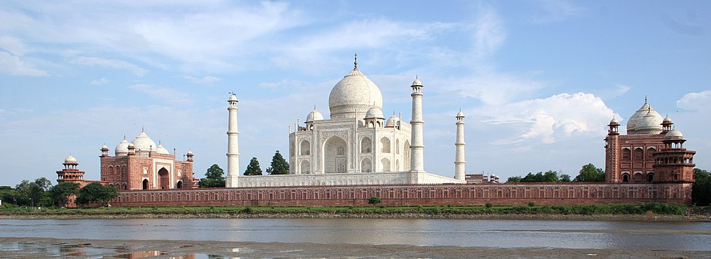

The Taj Mahal was commissioned by Shah Jahan in 1631, to be built in the memory of his wife Mumtaz Mahal, a Persian princess who died giving birth to their 14th child, Gauhara Begum.Construction of the Taj Mahal began in 1632.The imperial court documenting Shah Jahan's grief after the death of Mumtaz Mahal illustrate the love story held as the inspiration for Taj Mahal. The principal mausoleum was completed in 1643[8] and the surrounding buildings and garden were finished about five years later

The Taj Mahal is built on a parcel of land to the south of the walled city of Agra. Shah Jahan presented Maharajah Jai Singh with a large palace in the centre of Agra in exchange for the land.[36] An area of roughly 1.2 hectares (3 acres) was excavated, filled with dirt to reduce seepage, and levelled at 50 metres (160 ft) above riverbank. In the tomb area, wells were dug and filled with stone and rubble to form the footings of the tomb. Instead of lashed bamboo, workmen constructed a colossal brick scaffold that mirrored the tomb. The scaffold was so enormous that foremen estimated it would take years to dismantle.
The Taj Mahal was constructed using materials from all over India and Asia. It is believed over 1,000 elephants were used to transport building materials. The translucent white marble was brought from Makrana, Rajasthan, the jasper from Punjab, jade and crystal from China. The turquoise was from Tibet and the Lapis lazuli from Afghanistan, while the sapphire came from Sri Lanka and the carnelian from Arabia. In all, twenty-eight types of precious and semi-precious stones were inlaid into the white marble.
According to the legend, Shah Jahan decreed that anyone could keep the bricks taken from the scaffold, and thus it was dismantled by peasants overnight. A 15-kilometre (9.3 mi) tamped-earth ramp was built to transport marble and materials to the construction site and teams of twenty or thirty oxen pulled the blocks on specially constructed wagons. An elaborate post-and-beam pulley system was used to raise the blocks into desired position. Water was drawn from the river by a series of purs, an animal-powered rope and bucket mechanism, into a large storage tank and raised to a large distribution tank. It was passed into three subsidiary tanks, from which it was piped to the complex.
The plinth and tomb took roughly 12 years to complete. The remaining parts of the complex took an additional 10 years and were completed in order of minarets, mosque and jawab, and gateway. Since the complex was built in stages, discrepancies exist in completion dates due to differing opinions on "completion". Construction of the mausoleum itself was essentially completed by 1643[8] while work continued on the outlying buildings. Estimates of the cost of construction vary due to difficulties in estimating costs across time. The total cost has been estimated to be about 32 million Indian rupees,[8] which is around 52.8 billion Indian rupees ($827 million US) based on 2015 values.